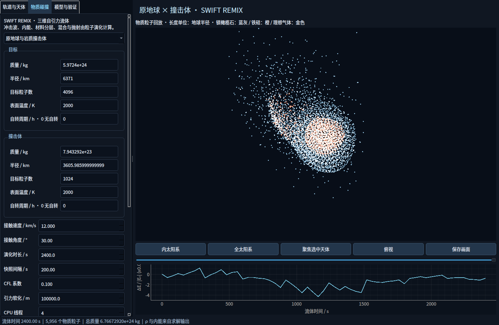

JPL DE440 星历初值与回放，自适应 IAS15 积分，全体天体 1PN 与太阳、地球 J₂ 引力项。
COSMOS NATIVE · DESKTOP SCIENCE
从天体轨道
到物质碰撞。
使用原生计算后端探索太阳系，逐个设置天体，并计算碰撞中的压力、内能、材料混合与抛射。用实际数据检查结果。
原生版运行于 Linux / Windows 11 + WSLg。下载包包含源码与安装脚本，需要下载依赖并编译；不是免安装 exe。
每颗天体独立显隐和编辑。质量与半径分开设置，位置、速度可修改，接触状态可转入流体实验。
SWIFT REMIX 计算三维自引力流体。岩质核心与地幔使用 ANEOS 材料模型，保存快照与守恒量。

已经运行的精度检查
| 检查 | 实际结果 | 含义 |
|---|---|---|
| 太阳系积分一年 | 地球与 DE440 相差约 109 米 | 2026-09-05 初值，日心位置对比 |
| 地球向太阳坠落 | 约 65.37084670 天接触 | 两种最大步长的接触时刻差小于 0.01 秒 |
| 三维 Sod 激波 | 密度 L₁ 误差 0.02941 → 0.02353 | 36,864 → 124,416 粒子，比较精确 Euler 解 |
| 两组岩质碰撞 | 最大能量误差 0.429% → 0.273% | 同时增加粒子数并减小软化；末态热量仍相差约 4.5% |
| 孤立岩质初态 | 95% 粒子半径变化约 −0.072% | 18,830 粒子，独立演化 2,400 秒 |
这些结果只对应列出的场景和设置。守恒误差小，不等于所有物理过程已经完整模拟。完整模型与验证说明见下载包的 SCIENCE.md。
物理范围
轨道采用弱场 1PN；流体采用牛顿自引力 SPH。尚无完整爱因斯坦场方程、辐射磁流体、核反应和固体强度断裂。恒星示例采用多方结构，不能当作真实太阳的完整模型。
地球与太阳的质量和尺度差异很大。默认粒子数不能解析其完整破坏过程；需要进一步的多尺度建模和收敛验证。程序明确保留这些限制。
安装与启动
解压源码，在 Ubuntu 24.04 桌面或 Windows 11 的 Ubuntu WSLg 中进入项目目录：
bash scripts/install.sh
bash run.sh安装时联网获取星历、材料表、字体与科学库，编译 SWIFT。依赖约占 1.7 GB，之后可离线计算。运行数据保存在 runs/；完成后在「物质碰撞」中拖动时间轴回放。
在此项目已配置的电脑上，直接双击桌面的「宇宙模拟器.cmd」。手机可以使用原有网页版。